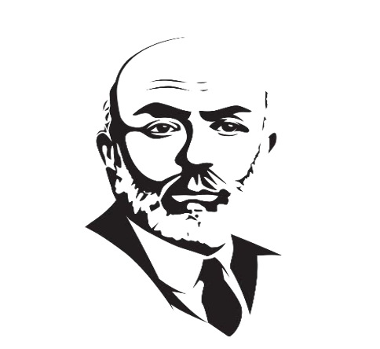
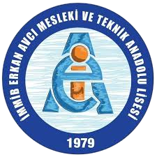

MEHMET AKİF ERSOY
SAFAHAT SÖZLÜĞÜ
DİLİMİZ ZENGİNLİĞİMİZ PROJESİ
İMMİB ERKAN AVCI TEKNİK VE MESLEK ANADOLU LİSESİ

Mehmet Akif Ersoy'un eserlerine yolculuk...
İMMİB ERKAN AVCI MTAL

DİLİMİZ ZENGİNLİĞİMİZ PROJESİ
İMMİB ERKAN AVCI TEKNİK VE MESLEK ANADOLU LİSESİ
Sözlükler, kendileri aracılığıyla metinleri anladığımız kelime, deyim, tabir, kavram, terim vb. sözcüklerin anlamlarını gösteren eserlerdir. Bilhassa sanat değeri taşıyan, estetik unsurları içeren edebî eserlere çeşitli sözlükler olmadan nüfuz edilemez.
Bu yüzden edebi metinleri yorumlamak için, sözcük, terim, deyim, kavram, gösterilen vb. anlamları içeren sözlükler yazılmalıdır. Bu amaç doğrultusunda Türk edebiyatının müstesna eserlerinden biri olan İstiklal Şairimiz Mehmet Akif Ersoy'un "SAFAHAT" adlı eserinin sözlük çalışması yapılmıştır.
Mehmet Akif şiir, nesir ve fikir alanındaki hünerini Safahat'ta ortaya koymuştur. Safahat Türk toplumunda büyük tesir uyandırmış bir eserdir hatta öyle ki günümüzde en çok sevilen ve okunan kitaplar arasında yer alır. Safahat kelime anlamı olarak "hayatın değişik yüzleri, görünümleri ve evreler" anlamına gelmektedir. Mehmet Akif Ersoy, yaşadığı devrin siyasi ve sosyal hayatını çok iyi analiz etmiş ve eserlerinde de başarılı bir şekilde işlemiş edebiyatçılarımızdandır.
Sözlük çalışmamızda "SÖZLÜK ÖZGÜRLÜKTÜR" sloganıyla edebiyat tarihimizde eserleriyle Türkçeyi ustalıkla nasıl kullandığını gösteren Akif'in "Safahat" adlı eserinin öğrencilerimiz tarafından anlaşılarak okunması ve dilimizin zenginliklerinin "Safahat"tan yola çıkarak öğrencilerimize kazandırılması amaçlanmıştır.
Mehmet Âkif Ersoy 20 Aralık 1873'te İstanbul'da, Fatih ilçesi Sarıgüzel mahallesinde dünyaya geldi. Annesi Buhara'dan Anadolu'ya geçmiş bir ailenin kızı olan Emine Şerif Hanım; babası ise Kosova doğumlu, Fatih Camii medrese hocalarından Mehmet Tahir Efendi'dir. Babası, ona ebced hesabıyla doğum tarihini ifade eden "Ragîf" adını verdi. Fakat telaffuzu zor geldiğinden arkadaşları ve annesi ona "Âkif" ismiyle seslendi, zamanla bu ismi benimsedi.
İlköğrenimine Fatih'te Emir Buhari Mahalle Mektebi'nde başladı. İki yıl sonra iptidai (ilkokul) bölümüne geçti ve babasından Arapça öğrenmeye başladı. Ortaöğrenimine Fatih Merkez Rüştiyesi'nde başladı (1882). Aynı zamanda Fatih Camii'nde Farsça derslerini takip etti. Mehmet Âkif, rüştiyedeki eğitimi boyunca Türkçe, Arapça, Farsça ve Fransızca dillerinde hep birinci oldu.
Rüştiyeyi bitirdikten sonra 1885'te dönemin gözde okullarından Mülkiye İdadisi'ne kaydoldu. 1888'de okulun yüksek kısmına devam etmekte iken babasını kaybetti. Ertesi yıl büyük Fatih yangınında evlerinin yanması aileyi yoksulluğa düşürdü. Babasının öğrencisi Mustafa Sıtkı aynı arsa üzerine küçük bir ev yaparak aileyi bu eve yerleştirdi.
Mehmet Âkif öncelikle meslek sahibi olmak ve yatılı okulda okumak istediği için Mülkiye İdadisi'ni bıraktı. O yıllarda yeni açılan ve ilk sivil veteriner yüksekokulu olan Ziraat ve Baytar Mektebi'ne (Tarım ve Veterinerlik Okulu) kaydoldu. Okul yıllarında spora büyük ilgi gösterdi; başta güreş ve yüzücülük olmak üzere uzun yürüyüş, koşma ve gülle atma yarışlarına katıldı; şiire olan ilgisi okulun son iki yılında arttı. Mektebin baytarlık bölümünü 1893 yılında birincilikle bitirdi.
II. Meşrutiyet'in büyük etkisinde kalan Âkif, arkadaşı Eşref Edip ve Ebül'ula Mardin'in çıkardığı ve ilk sayısı 27 Ağustos 1908'de yayımlanan Sırat-ı Müstakim dergisinin başyazarı oldu. Balkan Savaşı, Çanakkale Muharebeleri ve Kurtuluş Savaşı dönemlerinde çeşitli görevlerde bulunup, Balıkesir'e giderek 6 Şubat 1920 günü Zağnos Paşa Camii'nde çok heyecanlı bir hutbe verdi. Halkın beklenmedik ilgisi karşısında daha birçok yerde hutbe verdi, konuşmalar yaptı ve İstanbul'a döndü.
1921'de Ankara'da Taceddin Dergâhı'na yerleşen Mehmet Âkif, 500 lira ödül konularak açılan İstiklâl Marşı yarışmasına başta katılmadı. Millî Eğitim Bakanı Hamdullah Suphi Bey'in ricası üzerine arkadaşı Hasan Basri Beyin teşvikiyle ikna oldu. Onun orduya ithaf ettiği İstiklâl Marşı, 17 Şubat günü Sırat-ı Müstakim ve Hâkimiyet-i Milliye'de yayımlandı.
Hamdullah Suphi Bey tarafından mecliste okunup ayakta dinlendikten sonra 12 Mart 1921 Cumartesi günü saat 17:45'te Milli Marş olarak kabul edildi. Âkif, ödül olarak verilen 500 lirayı hayır kurumuna bağışladı.
Kurtuluş Savaşı ve zafer sonrası uzunca bir süre Mısır'da yaşayan Milli Şâirimiz Mehmet Âkif Ersoy, 17 Haziran 1936'da tedavi için İstanbul'a döndü. 27 Aralık 1936 tarihinde İstanbul'da, Beyoğlu'ndaki Mısır Apartmanı'nda vefat etti, Edirnekapı Şehitliğinde yatmaktadır. En önemli iki eseri İstiklal Marşı ve şiirlerini yedi kitap halinde topladığı Safahat'tır.
Mehmed Âkif Ersoy'un (ö. 1936) yedi kitaptan oluşan şiir külliyatı.
Mehmed Âkif'in gençlik yıllarında çok sayıda şiir yazdığı bilinmektedir. Dergilerde ve dostlarında bulunan örneklere ve kendi ifadesine göre bu şiirler Tanzimat döneminde bazı değişikliklerle devam eden divan şiiri, özellikle de Ziyâ Paşa ve Muallim Nâci, kısmen Abdülhak Hâmid tarzında yazılmıştır. Kitaplarına almadığı bu tür şiirlerden daha sonra vazgeçtiği, hiçbir şiirinin yayımlanmadığı 1901-1908 yılları arasında hayalden uzak, içinde yaşadığı toplumun meselelerine çözüm arayan bir yolda kararlı olduğu anlaşılmaktadır.
İlk defa 1329'da (1911) İstanbul'da basılan ve Safahat adını taşıyan kitap eserin diğer kitaplarına göre hacimce en geniş olanıdır ve tamamı 1908-1910 yıllarında Sırât-ı Müstakîm'de yayımlanmış manzumeleri ihtiva etmektedir. Şair, okuyucuya hitaben baş tarafa eklediği beş beyitlik başlıksız manzum parçada, şiirde sanat anlayışının tasannudan uzak olduğunu, sadece kendi sıkıntılarını muhatabına aktarma arzusu taşıdığını ifade eder.
Bu kitaptaki şiirlerin en eskisi, neşri sırasında alt tarafına konulan kayda göre 23 Haziran 1904 tarihini taşıyan "Bir Mersiye"dir. Şiirlerin çoğu şairin kendi çevresinde müşahede ettiği toplumun acılarını dile getirir. Böylece daha sonraki bir manzumesinde belirteceği, "İnan ki her ne demişsem görüp de söylemişim" formülü bu ilk kitabından itibaren gerçekleşmeye başlamıştır. Mehmed Âkif'in toplumun alt tabakasına mensup insanların hastalık, ölüm, fakirlik, sefalet, iptilâlar ve kötü yönetim karşısındaki çaresizliğini, suskunluğunu bir fotoğraf gerçekçiliğiyle ve küçük manzum hikâyeler şeklinde anlattığı şiirleri şunlardır: "Hasta", "Küfe", "Hasır", "Meyhane", "Mezarlık", "Bayram", "Selma", "Seyfi Baba", "Kör Neyzen", "İstibdat", "Mahalle Kahvesi", "Köse İmam", "Âhiret Yolu", "Yemişçi İhtiyar."
Yine toplumun daha üst yapıda ve daha soyut meselelerini dile getiren manzumeleri de "Durmayalım", "Geçinme Belâsı", "Merhum İbrâhim Bey", "Azim", "Cânan Yurdu", "Bir Mezar Taşına Yazılmıştı" ve "Âmin Alayı"dır. "Kocakarı ile Ömer" ve "Dirvas" başlıklı, konusunu İslâm tarihinden alan iki manzum hikâye ile birer ideal devlet adamı portresi çizerken "Acem Şahı", "İstibdat", "Hürriyet" başlıklı şiirler şairin dönemin siyasî yöneticilerine karşı tenkitleridir.
Bunlara daha soyut / felsefî mânada insanı ele aldığı "İnsan", "Bir Resmin Arkasına", "Bu da Bir Mezar Taşı İçin Yazılmıştı", "Tercümedir", "Hüsrân-ı Mübîn", "Hasbihal" adlı manzumeler eklendiğinde ilk Safahat'taki kırk dört şiirin toplumu ve içindeki insanı işlemekte olduğu görülür. Bunların dışında kalanlardan "Fâtih Camii" çocukluk hâtıralarını, "Bir Mersiye", "Selma", "Merhum İbrâhim Bey" yakınlarının ölümü üzerine duygularını, "Ressam Haklı", "Şair Huzurında Münekkit", "Bebek yahud Hakk-ı Karâr" şairin nükte ve hiciv tarafını yansıtır.
Çoğu lirik tarzda olan "Hasbihal", "Cânan Yurdu", "Gül-Bülbül", "İstiğrak" ve özellikle "Tevhid yahud Feryad" şairin dinî-mistik duygularını ifade eder.
Eserin bundan sonraki bölümleri yine Safahat üst başlığı ile fakat ayrı adlarla yayımlanmıştır. İkinci kitap Süleymaniye Kürsüsünde adıyla tek ve uzun bir metindir. 1912'de Sırât-ı Müstakîm'de (bu sırada Sebîlürreşâd adını almıştır) dokuz sayı tefrika edildikten sonra aynı yıl kitap olarak da çıkar. Birinci şahıs ağzından bir tahkiye olan eserin başında şair Galata Köprüsü'nden Yenicami'ye doğru gitmektedir.
Haliç'in yosunlu suları ve bakımsız sokaklar birtakım nüktelerle anlatılırken yol üzerindeki Yenicami, daha sonra Süleymaniye Camii sanatkârane bir şekilde tasvir edilir. Caminin kürsüsünde yaşlı bir vâiz konuşmaktadır. Hikâyenin bundan sonrası, aslen Özbekistanlı olan bu vâizin dolaştığı Türk-İslâm dünyasında gördüklerini zaman zaman yorumlayarak anlattıklarıdır. Âkif'in, İslâm coğrafyasını ve kavimlerini dikkate alarak İslâm idealiyle (İslâmcılık) ilgili fikirlerini dile getiren ilk eseri olması bakımından Süleymaniye Kürsüsünde ayrı bir önem taşır.
Ona göre İslâm toplumunun çöküşünün sebebi İslâm'ın aslî kaynaklarından uzaklaşılmasıdır. Kürsüde konuşan vâizin anlattıklarıyla, o yıllarda İstanbul'a gelen Özbekistanlı Abdürreşid İbrahim'in aynı dönemde yayımlanan Âlem-i İslâm ve Japonya'da İntişâr-ı İslâmiyyet adlı kitabında İslâm coğrafyası hakkında yazdıkları arasında paralellik bulunmaktadır. Bu bilgilerin dışında "İslâm'ı asrın idrakine söyletmek" için yapılan yorumlar doğrudan doğruya Âkif'e aittir. Vâizin konuşması bir dua ile sona erer.
Hakkın Sesleri adını taşıyan üçüncü kitap (İstanbul 1331) Balkan savaşları yıllarının acılarını dile getiren on şiirden oluşur. 1913 yılının Ocak-Mayıs aylarında Sebîlürreşâd'da çıkan ve kronolojik sırayla kitaba giren ilk dokuz manzumeden sekizi Kur'ân-ı Kerîm'den bazı âyetlerin, biri bir hadisin serbest yorumunu ihtiva eder. Sonuncu şiir "Pek Hazin Bir Mevlid Gecesi" başlıklı kısa bir manzumedir.
Başlıkları olmayan şiirlerde âyet veya hadis metni ve tercümesinden sonra manzume metni gelmektedir. Gerek âyetlerin gerekse hadisin ortak meâlleri insanların kendi hataları sebebiyle uğradıkları musibetlerin etrafında toplanmaktadır. Mevlid gecesiyle ilgili şiir ise bu musibetlerden ibret alıp uyanmaya bir çağrı ve Hz. Peygamber'in ruhaniyetinden istimdat mânası taşımaktadır. Kitabın sonunda Âkif'in yakın dostlarından Ferit Kam'ın "Enîs-i Rûhum Âkif'e" hitabıyla sanata ve şiire dair bir çeşit takriz mahiyetindeki mektubu bulunmaktadır.
Safahat'ın, adı ve mahiyeti bakımından ikinci kitapla benzerlik gösteren dördüncü kitabı Fâtih Kürsüsünde de (İstanbul 1332) tek ve uzun bir manzumeden oluşur. 1913-1914 yılları içinde Sebîlürreşâd'ın yirmi sekiz sayısında tefrika edilmiştir. Başlangıçta, Anadolu yakasından vapurla gelip Galata Köprüsü'ne inen iki arkadaş buradan yürüyerek Fatih'e gider.
Yolda yine nükteli bir sohbet esnasında etrafta gördükleri şeyler hakkında bazan bunların getirdiği çağrışımlarla birtakım dinî, siyasî konularla dil ve edebiyat konularına girip II. Meşrutiyet hareketinden sonra ortaya çıkan bozuklukları eleştirirler. Nihayet Fâtih Camii'ne giren iki arkadaş kürsüdeki vâizi dinlemeye başlar. Vaazın konusu çalışma hakkındadır. Vâiz konuşmasının içinde bir laytmotif gibi, "Bekāyı hak tanıyan, sa'yi bir vazîfe bilir / Çalış, çalış ki bekā sa'y olursa hak edilir" mısralarını altı defa tekrar eder.
Manzumenin bu beyitle birbirinden ayrılan parçalarının her birinde hilkatin, gezegen ve yıldızların, bulutların, maddenin en küçük parçalarının, yeryüzündeki varlıkların, kısaca bütün kâinatın devamlı hareket halinde olduğu söylenir. Eski İslâm medeniyetinden ve Batı'dan örnekler verilerek çalışmanın hak edilen semeresi ortaya konur. Doğu milletleri ve İslâm dünyası daldığı derin uykudan uyanmalı ve miskinlikten kurtulmalıdır.
Böylece Âkif, Süleymaniye Kürsüsünde tasvir ettiği İslâm dünyasının perişanlığını onun tembelliğine, kurtuluşunu da çalışmasına bağlamaktadır. Ona göre ebedî hayatın varlığına inanıldığı kadar çalışmanın da insanlık görevi olduğuna inanmak gerekir. Bu kitap da vâizin bir duasıyla sona erer.
Hakkın Sesleri ile paralellik gösteren beşinci kitap Hâtıralar başlığını taşır (İstanbul 1335). Manzumelerin çoğunun Sebîlürreşâd'daki neşir tarihleri 1913-1915 yılları arasıdır. Bazılarının altında Berlin'de kaleme alınmış olduğu kaydı bulunmaktadır. Kitaptaki on manzumeden dördü âyet, ikisi hadis meâllerinin serbest yorumudur. Bu defa Balkan savaşlarının yol açtığı facialara I. Dünya Savaşı acıları da eklenmiştir.
Altı şiirin dışında kalan "Uyan" başlıklı manzume halkı meskenetten uyarmayı hedefler. Kitabın son üç şiiri Âkif'in 1914-1915 yıllarında gerçekleştirdiği üç seyahatin intibalarını taşır. Bunlardan "el-Uksûr'da" Mısır'a yaptığı ziyarette tarihî harabeler karşısındaki duygularını anlatır; uzun bir manzume olan "Berlin Hâtıraları"nda Teşkîlât-ı Mahsûsa'nın verdiği görevle gittiği Berlin'de çeşitli yönleriyle Doğu'yu ve Batı'yı karşılaştırır.
Şiirin dokuzuncu bölümü "Târîh-i Kadîm" sebebiyle Tevfik Fikret ve arkadaşlarının tenkidi için kaleme alınmıştır. Kitaba ikinci baskısında giren (1918) sonuncu şiir "Necid Çöllerinden Medine'ye" ise şairin aynı teşkilâtın verdiği görevle gittiği Necid'den Medine'ye kadar olan yolculuğunu ve Hz. Peygamber'in kabrini ziyaretinde yaşadığı duygularını dile getiren en lirik şiirlerindendir.
Safahat'ın altıncı kitabı Âsım (İstanbul 1342) Âkif'in yazılışı ile basılması arasındaki sürenin en uzun olduğu eseridir. Âsım'ın ilk parçaları Sebîlürreşâd'da 1919 Eylülünde çıkmaya başlamış, araya Mehmed Âkif'in Millî Mücadele'ye katılmak üzere Anadolu'ya geçişi ve faaliyetleri girmiş, bu sebeple dergide sadece bir kısmı uzun aralıklarla çıkabilmiştir.
Mehmed Âkif'in Mısır'da yaşadığı sırada Kahire'de yayımlanan Safahat'ın son kitabı Gölgeler'dir (Kahire 1352). On yedisi kıta olmak üzere kitapta yer alan kırk bir şiirden en eskisi 4 Temmuz 1334 (1918) tarihini taşırken Âkif'in sağlığında basılmış son şiiri de 22 Ağustos 1349 (1933) tarihli "Sanatkâr" başlıklı manzumedir.
Gölgeler'de 1918-1921 tarihlerini taşıyanların çoğu, özellikle bunlar arasında yine âyetlerin serbest yorumları olan "Hâlâ mı Boğuşmak", "Yeis Yok" ve "Azimden Sonra Tevekkül" manzumeleri öncekiler gibi irade, ümit ve gayret temaları üzerine kurulmuşken diğerleri genellikle şairin Mısır'daki bir çeşit sürgün hayatını ve bedbinliklerini yansıtır. Beklediği İslâm idealinin gerçekleşmemesinin verdiği ümitsizlikle vatanından uzak yaşamaya mecbur bir ruh halinin doğurduğu karamsarlık "Hüsran", "Şark", "Umar mıydın?", "Mehmed Ali'ye", "Bülbül", "Leylâ", "Firavun ile Yüzyüze", "Vahdet" şiirlerinde açıkça hissedilir. Gölgeler'e asıl özelliğini veren ise hayatında ve eserinde tasavvufa meyletmemiş olduğu bilinen şairin dinî fikirlerinin mistik duygulara yöneldiği "Gece", "Hicran" ve "Secde" şiirleridir. Altlarındaki kayıtlara göre ikamet etmekte olduğu Hilvan'da bir duygu yoğunluğuyla yazıldığı anlaşılan şiirler Âkif'in en lirik parçalarındandır. Bunlara yine benzer ruh halini yansıtan "Said Paşa İmamı" ve "Hüsam Efendi Hoca" manzum hikâyeleri de eklenebilir. "Sanatkâr" başlıklı şiiri ise Âkif'in Müslümanların dertleri ve hayal kırıklıkları ile geçen hayatının kısa, duygulu bir özeti olduğu gibi Safahat'ın önceki ciltlerinde belirmeyen, fakat şahsiyetinin önemli bir tarafını teşkil eden sanat sevgisini, özellikle de Batı mûsikisine olan ilgisini aksettirir.
Safahat'ın her kitabı ayrı ayrı olmak üzere Mehmed Âkif hayatta iken birkaç defa basılmış, ölümünden sonra ve özellikle vefatının 50. yılından itibaren pek çok yayınevi, resmî ve özel kuruluşça bugüne kadar yedi kitap bir arada olarak bazıları inceleme de ihtiva etmek suretiyle 100'den fazla baskısı yapılmış, böylece Safahat Türkiye'de en çok tiraja ulaşan şiir kitaplarından biri olmuştur. Bu basımlar arasında Âkif'in Safahat'a almadığı şiirleriyle beraber (Safahat, İstanbul 1987), bütün şiirlerin ilk yayın tarihleri, dergide ve çeşitli basımlarındaki karşılaştırmaları, özel adlar fihristi (Safahat: Edisyon Kritik, Ankara 1990) ve eski-yeni harflerle tenkitli neşir (Safahat, İstanbul 1991) olmak üzere önemli birkaç yayın M. Ertuğrul Düzdağ tarafından gerçekleştirilmiştir. Ayrıca İsmail Hakkı Şengüler'in on ciltlik Açıklamalı ve Lügatçeli Mehmed Âkif Külliyatı'nın (İstanbul 1990-1992) I-IV. ciltleri Safahat'a ayrılmıştır.1
Kelime ve anlamlarına göz atın